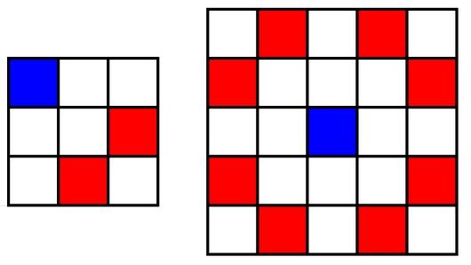

昨天参加了cf—edu-73 div2。嗯 很菜 以后有时间多参加一下cf，提一下rating。
A题 2048 Games：
题目：
You are playing a variation of game 2048. Initially you have a multiset 𝑠 of 𝑛 integers. Every integer in this multiset is a power of two.
You may perform any number (possibly, zero) operations with this multiset.
During each operation you choose two equal integers from 𝑠, remove them from 𝑠 and insert the number equal to their sum into 𝑠.
For example, if 𝑠={1,2,1,1,4,2,2} and you choose integers 2 and 2, then the multiset becomes {1,1,1,4,4,2}.
You win if the number 2048 belongs to your multiset. For example, if 𝑠={1024,512,512,4} you can win as follows: choose 512 and 512, your multiset turns into {1024,1024,4}. Then choose 1024 and 1024, your multiset turns into {2048,4} and you win.
You have to determine if you can win this game.
You have to answer 𝑞 independent queries.
Input
The first line contains one integer 𝑞 (1≤𝑞≤100) – the number of queries.
The first line of each query contains one integer 𝑛 (1≤𝑛≤100) — the number of elements in multiset.
The second line of each query contains 𝑛 integers 𝑠1,𝑠2,…,𝑠𝑛 (1≤𝑠𝑖≤229) — the description of the multiset. It is guaranteed that all elements of the multiset are powers of two.
Output
For each query print YES if it is possible to obtain the number 2048 in your multiset, and NO otherwise.
You may print every letter in any case you want (so, for example, the strings yEs, yes, Yes and YES will all be recognized as positive answer).
Example
1 | 6 |
1 | YES |
Note
In the first query you can win as follows: choose 512 and 512, and 𝑠 turns into {1024,64,1024}. Then choose 1024 and 1024, and 𝑠 turns into {2048,64} and you win.
In the second query 𝑠 contains 2048 initially.
解法：
统计数组中小于等于2048的数字，计算出sum，若sum>=2048,则肯定能够凑齐2048
代码：
1 | #include<stdio.h> |
B题：Knights
题目：
a chess board with 𝑛 rows and 𝑛 columns. Initially all cells of the board are empty, and you have to put a white or a black knight into each cell of the board.
A knight is a chess piece that can attack a piece in cell (𝑥2, 𝑦2) from the cell (𝑥1, 𝑦1) if one of the following conditions is met:
|𝑥1−𝑥2|=2 and |𝑦1−𝑦2|=1, or
|𝑥1−𝑥2|=1 and |𝑦1−𝑦2|=2.
Here are some examples of which cells knight can attack. In each of the following pictures, if the knight is currently in the blue cell, it can attack all red cells (and only them).

A duel of knights is a pair of knights of different colors such that these knights attack each other. You have to put a knight (a white one or a black one) into each cell in such a way that the number of duels is maximum possible.
Input
The first line contains one integer 𝑛 (3≤𝑛≤100) — the number of rows (and columns) in the board.
Output
Print 𝑛 lines with 𝑛 characters in each line. The 𝑗-th character in the 𝑖-th line should be W, if the cell (𝑖, 𝑗) contains a white knight, or B, if it contains a black knight. The number of duels should be maximum possible. If there are multiple optimal answers, print any of them.
Example
1 | 3 |
1 | WBW |
Note
In the first example, there are 8 duels:
the white knight in (1, 1) attacks the black knight in (3, 2);
the white knight in (1, 1) attacks the black knight in (2, 3);
the white knight in (1, 3) attacks the black knight in (3, 2);
the white knight in (1, 3) attacks the black knight in (2, 1);
the white knight in (3, 1) attacks the black knight in (1, 2);
the white knight in (3, 1) attacks the black knight in (2, 3);
the white knight in (3, 3) attacks the black knight in (1, 2);
the white knight in (3, 3) attacks the black knight in (2, 1).
解法：
WB交叉输出即可
代码：
1 | #include<algorithm> |
C题 Perfect Team
题目：
You may have already known that a standard ICPC team consists of exactly three members. The perfect team however has more restrictions. A student can have some specialization: coder or mathematician. She/he can have no specialization, but can’t have both at the same time.
So the team is considered perfect if it includes at least one coder, at least one mathematician and it consists of exactly three members.
You are a coach at a very large university and you know that 𝑐 of your students are coders, 𝑚 are mathematicians and 𝑥 have no specialization.
What is the maximum number of full perfect teams you can distribute them into?
Note that some students can be left without a team and each student can be a part of no more than one team.
You are also asked to answer 𝑞 independent queries.
Input
The first line contains a single integer 𝑞 (1≤𝑞≤104) — the number of queries.
Each of the next 𝑞 lines contains three integers 𝑐, 𝑚 and 𝑥 (0≤𝑐,𝑚,𝑥≤108) — the number of coders, mathematicians and students without any specialization in the university, respectively.
Note that the no student is both coder and mathematician at the same time.
Output
Print 𝑞 integers — the 𝑖-th of them should be the answer to the 𝑖 query in the order they are given in the input. The answer is the maximum number of full perfect teams you can distribute your students into.
Example
1 | 6 |
1 | 1 |
Note
In the first example here are how teams are formed:
1.the only team of 1 coder, 1 mathematician and 1 without specialization;
2.all three teams consist of 1 coder and 2 mathematicians;
3.no teams can be formed;
4.no teams can be formed;
5.one team consists of 1 coder, 1 mathematician and 1 without specialization, the rest aren’t able to form any team;
6.one team consists of 1 coder, 1 mathematician and 1 without specialization, one consists of 2 coders and 1 mathematician and one consists of 1 coder and 2 mathematicians.
解法：
首先统计sum，得到sum/3，即能分得队伍的最大值，然后取c,m的最小值，最后再取两个值中的最小值。
代码：
1 | #include<algorithm> |
D题
题目：
You have a fence consisting of 𝑛 vertical boards. The width of each board is 1. The height of the 𝑖-th board is 𝑎𝑖. You think that the fence is great if there is no pair of adjacent boards having the same height. More formally, the fence is great if and only if for all indices from 2 to 𝑛, the condition 𝑎𝑖−1≠𝑎𝑖 holds.
Unfortunately, it is possible that now your fence is not great. But you can change it! You can increase the length of the 𝑖-th board by 1, but you have to pay 𝑏𝑖 rubles for it. The length of each board can be increased any number of times (possibly, zero).
Calculate the minimum number of rubles you have to spend to make the fence great again!
You have to answer 𝑞 independent queries.
Input
The first line contains one integer 𝑞 (1≤𝑞≤3⋅10^5) — the number of queries.
The first line of each query contains one integers 𝑛 (1≤𝑛≤3⋅10^5) — the number of boards in the fence.
The following 𝑛 lines of each query contain the descriptions of the boards. The 𝑖-th line contains two integers 𝑎𝑖 and 𝑏𝑖 (1≤𝑎𝑖,𝑏𝑖≤10^9) — the length of the 𝑖-th board and the price for increasing it by 1, respectively.
It is guaranteed that sum of all 𝑛 over all queries not exceed 3⋅105.
It is guaranteed that answer to each query will not exceed 1018.
Output
For each query print one integer — the minimum number of rubles you have to spend to make the fence great.
###Example
input1
2
3
4
5
6
7
8
9
10
11
12
13
143
3
2 4
2 1
3 5
3
2 3
2 10
2 6
4
1 7
3 3
2 6
1000000000 2
output
1 | 2 |
Note
In the first query you have to increase the length of second board by 2. So your total costs if 2⋅𝑏2=2.
In the second query you have to increase the length of first board by 1 and the length of third board by 1. So your total costs if 1⋅𝑏1+1⋅𝑏3=9.
In the third query the fence is great initially, so you don’t need to spend rubles.
解法：
这个题后面补题做的(菜死了)。用dp[i][j]代表处理到i的位置时，增加j满足条件的最小值。
第二维数组大小只有3，因为在某一位置的数最多可能增加2个单位长度。
1 | if(a[i - 1] + j != a[i] + k) |
进行处理i时，与i-1进行比较，选择满足两个位置长度不同的时候，进行比较选择dp[i][k]的最小值。
代码：
1 | #include<stdio.h> |